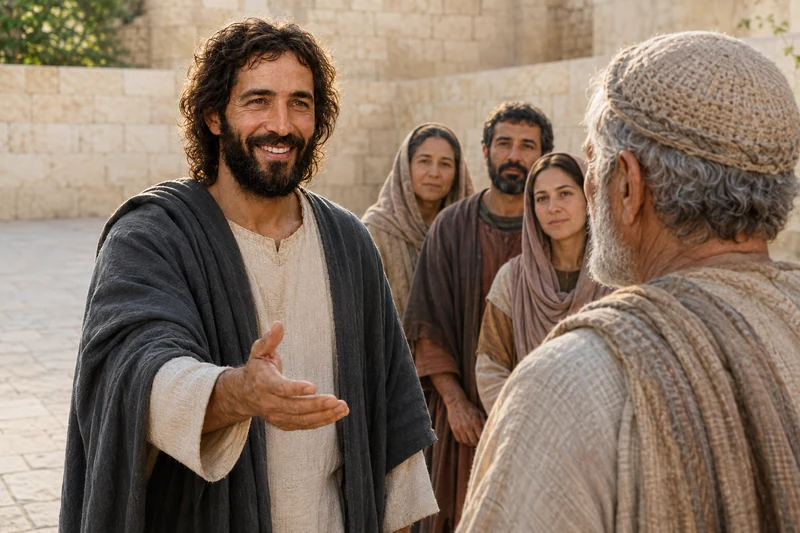
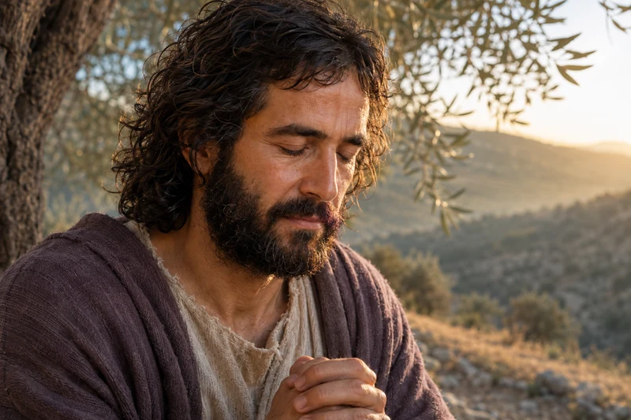
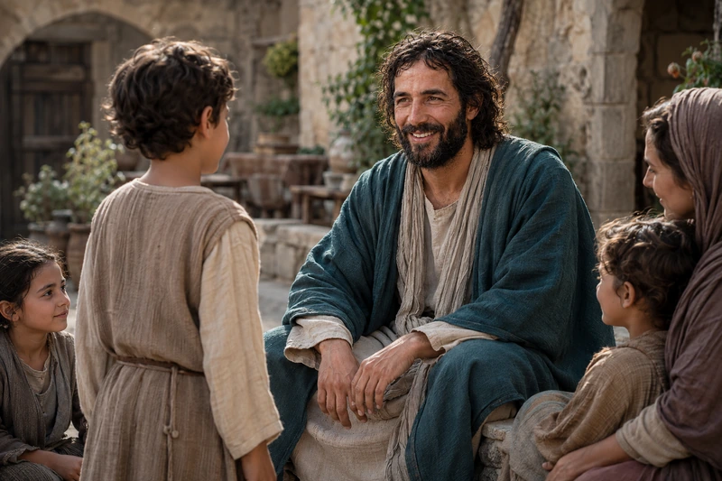
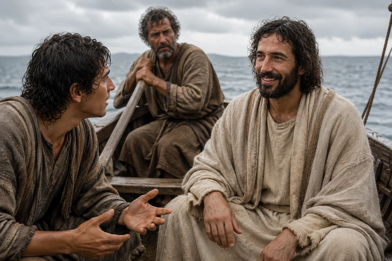
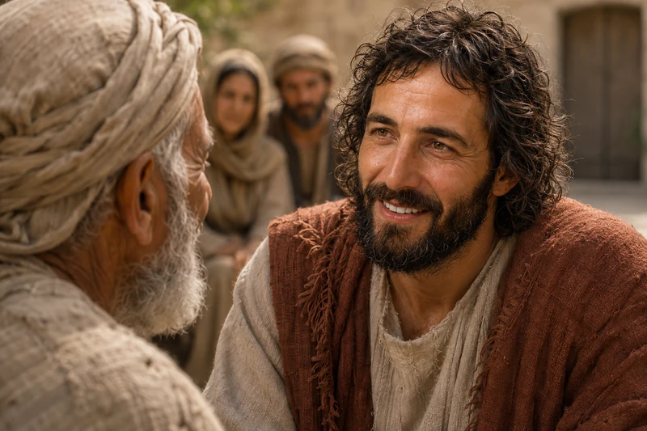

Latter-day Saints worship Jesus Christ as the divine Son of God, the Savior and Redeemer of the world. His life, Atonement, death, and Resurrection are at the center of their faith.
One Savior · A connected journey
Come to know Jesus Christ

Before Bethlehem: the Son and Jehovah
Explore His premortal identity, creation, covenant, deliverance, and the Old Testament witness of the Redeemer.
Open study →
Walk through His mortal ministry
Follow His baptism, invitations, journeys, disciples, and the growing witness of who He is.
Open study →
His miracles and compassion
Stay with the people He meets and discover how particular acts of healing reveal His character.
Open study →
Learn from the Master Teacher
Study His commandments and explore the Gospel parables through six connected themes.
Open study →
The Redeemer and risen Lord
Follow the final days of His mortal ministry, His sacrifice, and the witnesses of His Resurrection.
Open study →
The risen Savior in the Book of Mormon
Read His ministry at Bountiful, His covenant teachings, and His care for the gathered people.
Open study →
Jesus Christ in the Restoration and today
Explore restored witnesses of the living Savior, daily discipleship, and hope in His promised return.
Open study →The birth of Jesus Christ
Enter the complete companion study of the promises, Nativity accounts, and witnesses of His coming.
Open study →In His prayer to the Father, Jesus connects eternal life with knowing the Father and Jesus Christ, whom the Father sent. John 17:3 gives this journey its purpose. We can learn what He taught, notice how He treated people, and consider how to respond to His invitation in our own lives.
Follow the studies in order, or begin with a question you carry. Each path opens scripture in context and returns here, so you can move between His identity, His ministry, His saving mission, and His teachings without losing your place.
The eternal Son
His story begins before Bethlehem
John begins with the Word who was with God, through whom all things were made, and who became flesh. John 1:1–5, 14 invites us to recognize the divine identity of the One who enters mortal life. His birth is a beginning within that mortal life; the scriptural witness reaches further back.
In Moses 1:32–39, the Father identifies His Only Begotten Son in the work of creation and declares His purpose for His children. Latter-day Saints also identify Jesus Christ as Jehovah, the God of Israel. Read the deliverance account in Exodus 3:7–14 and listen to the Lord's concern for the suffering of His people. Covenant and compassion belong together in this witness.
Study the witness before Bethlehem
Read the passages about the Son, Jehovah, creation, and deliverance with their distinct settings and speakers.
Open study →Continue to His coming into the world
Follow the Nativity in its own full study, with the separate witnesses of Matthew, Luke, and the Book of Mormon.
Open study →An invitation to begin
He invites people to come and see

Explore and study
Come and see
Andrew and another disciple follow Jesus. His invitation gives them an opportunity to spend time with Him and begin to know Him.
Two disciples hear John the Baptist testify of Jesus and follow Him. Jesus turns and asks what they seek. Their question about where He lives leads to an invitation to come and see. In John 1:35–42, Andrew then brings his brother Simon. Learning of Christ becomes personal through listening, following, and sharing a discovery with someone else.
Philip offers a similar invitation when Nathanael questions whether anything good can come from Nazareth. John 1:43–51 follows that exchange into Nathanael's encounter with Jesus. Jesus speaks of having seen him before Philip called him. Nathanael responds with recognition and faith, and Jesus points him toward greater things still to come.

Explore and study
Known before the meeting
Philip brings Nathanael to Jesus. The conversation moves from Nathanael’s question to recognition of the Son of God.
Compassion in an encounter
He attends to particular people

Explore and study
A mother’s persistent plea
A Syrophoenician mother asks Jesus to help her daughter. This illustration focuses on their conversation; Mark records that the daughter was healed at home.
The woman in Mark 7:24–30 comes to Jesus because her daughter needs help. Mark identifies her as a Gentile, a Syrophenician by nation. Their exchange includes difficult words about children and bread; her answer persists within that comparison. Jesus tells her that the devil has gone out of her daughter, and she returns home to find the child well. The daughter's healing is reported at home, distinct from the mother's conversation with Him.
In Mark 7:31–37, Jesus takes a man who is deaf and has a speech difficulty aside from the crowd. The account describes His touch, His upward look and sigh, and the opening of the man's ears. Reading the sequence helps us notice personal attention as well as power. The man is a person being ministered to, not merely an example of a condition.

Explore and study
He took him aside
Away from the crowd, Jesus gives the man His attention and looks toward heaven. Mark records the opening of his ears and the release of his speech.
Ten men call to Jesus for mercy in Luke 17:11–19. As they go in response to His instruction, they are cleansed. One returns, glorifies God, and falls at His feet in thanks. Luke identifies this man as a Samaritan. The account moves from shared need and healing to the gratitude of one person who turns back to the giver.

Explore and study
The one who returned
One of the ten men who were cleansed returns to give thanks. Luke identifies him as a Samaritan.
Love, loyalty, and attention
His teaching reaches the heart

Explore and study
Whose image is on the coin?
Jesus responds to a question about tribute by asking His listeners to consider the image on a coin and their duty to God.
A question about tribute is intended to trap Jesus in Matthew 22:15–22. He asks to see the coin and draws attention to its image and inscription before speaking about what belongs to Caesar and what belongs to God. His answer invites careful consideration of our duties and our deeper allegiance to God. It does not supply a ready-made answer to every later political dispute.
Jesus watches a widow place two small coins in the treasury. In Mark 12:38–44, He tells His disciples that the size of her gift cannot be understood by counting coins alone. Read the warning about those who exploit widows immediately before this moment. Her offering deserves reverence; her story should never become pressure on vulnerable people to neglect their needs.

Explore and study
The widow’s two coins
Jesus draws His disciples' attention to the widow's small gift and the sacrifice behind it. He sees what the size of an offering alone cannot tell them.
The man in Mark 10:17–27 asks about eternal life. Mark pauses to say that Jesus looks at him and loves him before describing the demanding invitation to give to the poor and follow. The man's sorrow reveals the hold of his possessions. The disciples' astonishment leads to Jesus' teaching about God's power. Love, challenge, and dependence on God all belong in the account.

Explore and study
Jesus looked on him with love
Jesus looks on the man with love and invites him to follow. Before the sorrowful departure, Mark gives us this moment of personal love and a searching invitation.
Martha welcomes Jesus into her home, while Mary sits at His feet and hears His word. When Martha speaks about serving alone, Jesus answers her concern in Luke 10:38–42. This moment invites attention to the anxiety that can accompany good work and to the value of hearing Him. It should not become a competition between people who serve differently.

Explore and study
Room to hear His words
Martha brings her concern to Jesus while Mary listens at His feet. His answer calls Martha by name and draws her attention to the good part Mary has chosen.
Redeemer and Lord
The Savior who gives His life and lives again
The Good Shepherd teaching in John 10:14–18 connects His knowledge of His sheep with His willingness to lay down His life. His saving mission reaches beyond the example of a good teacher. The accounts of His suffering, death, and Resurrection stand at the center of Christian faith and of the hope this study explores.
In Luke 24:36–49, the risen Jesus speaks peace to His disciples, invites them to see His hands and feet, and eats before them. He then opens their understanding of scripture and commissions their witness. The Resurrection is presented as an encounter with the living Savior, followed by a call to bear testimony and teach repentance.
The gathered people in 3 Nephi 11:10–17 receive another witness. Jesus identifies Himself, speaks of His sacrifice, and invites them to come forward individually. The Book of Mormon's account has its own place and people while testifying of the same risen Lord.
Follow the Redeemer and risen Lord
Trace the final ministry, sacrifice, and Resurrection witnesses in their scriptural settings.
Open study →Enter the complete Atonement study
Explore His redeeming sacrifice and grace through the existing illustrated companion study.
Open study →Read His ministry among the Nephites
Continue from His arrival into covenant teaching, healing, worship, and discipleship.
Open study →Consider the living Christ today
Read the witnesses of the Restoration and consider how His gospel can shape daily life.
Open study →Six invitations for today
Follow Him in the life you are living
A visit, a shared meal, an honest conversation, a moment of prayer: the imagined present-day scenes below bring discipleship into ordinary life. Let them help you consider one small way to follow Christ, with patience for the needs and pace of the people around you.
Be present in sorrow
The invitation in Romans 12:15 includes weeping with those who weep. Listening may be more useful than explaining. Ask what would help, respect the answer, and remember that companionship can continue after the first visit.

Explore and study
Stay beside someone who is grieving
One woman listens while another wipes away tears. There need not be an answer for every sorrow; sometimes care begins with being willing to stay.
Learn of Him with someone else
In John 5:39, Jesus speaks of the scriptures as witnesses of Him. Choose a short encounter, read it together, and discuss what He says and does. A sincere question can be part of faithful study; a listener does not have to supply an immediate answer to every question.

Explore and study
Read His words together
An adult listens as a teenage girl speaks beside the open scriptures. Reading together can include an honest question and the patience to hear one another.
Take a thoughtful step toward peace
Jesus connects reconciliation with worship in Matthew 5:23–24. A personal response might be a specific apology, making amends, or listening without preparing a defense. Repair can take time. Forgiveness and compassion need not require unsafe contact or the removal of appropriate boundaries.

Explore and study
Begin an honest conversation
The phone is set aside, and two people give a difficult conversation their attention. An honest word and a patient listener can be a beginning.
Let care become practical
The acts of care named in Matthew 25:35–40 are concrete: food, drink, welcome, clothing, and visiting. Consider a useful action within your means. Ask before assuming what someone needs, and let the person's dignity matter as much as the task.

Explore and study
Give practical help
A woman offers a bag of groceries at her neighbor's door. Food, a visit and a willing hand are simple ways to care for one another.
Welcome someone without expecting repayment
In Luke 14:12–14, Jesus challenges a pattern of hospitality limited to those who can return the invitation. A seat at a table, a genuine introduction, or a considerate invitation can become an act of welcome. Let the other person freely decide how to respond.

Explore and study
Make a place at the table
A chair is drawn out for a guest carrying a plate. A place at the table can be a quiet way of saying, You are welcome here.
Bring the ordinary day to the Father
Jesus teaches prayer to the Father in Matthew 6:6–8, with sincerity rather than a performance for others. Work, family responsibilities, uncertainty, gratitude, and weariness can all become occasions to turn to God. Choose a quiet moment and speak honestly.

Explore and study
Turn to God before the day begins
Work gloves and a lunch bag wait while a man pauses to pray. Before the day begins, there is time to turn to the Father.
Stand Forever · Second foundational question
Is Jesus Christ the Son of God and Savior of the world?
John 20 records the risen Jesus Christ appearing to Mary Magdalene and later showing His wounds to His disciples. 3 Nephi 11 presents a second witness of the resurrected Savior teaching people gathered at Bountiful. Together, these accounts center the question on who Jesus declared Himself to be and how His Resurrection shapes Christian discipleship.

- Read a witness. Open John 20 and notice the people, their questions, and the stated purpose of the account. Read the whole encounter before drawing a conclusion from one sentence.
- Compare and study. Use the scripture study below to read 3 Nephi 11 alongside the New Testament. Record both shared testimony and differences in setting.
- Watch and respond. Choose one of this page’s reviewed messages, follow a scripture it cites, and write one question or faithful action to return to.
focusChrist is an independent faith-based website. This page explains a Latter-day Saint perspective and links directly to official Church sources for authoritative teaching.
Watch and study
Begin with the living Savior
What difference does it make to believe Jesus Christ lives? Watch Finding Faith in Christ as an introduction to that question, then give the scriptural witnesses room to speak in their own words.
In John 20:11-18, Mary Magdalene comes to the tomb grieving. She recognizes Jesus when He addresses her by name, then tells the disciples she has seen Him. The account brings the Resurrection into a personal encounter: the one she mourned speaks to her.
Continue through verses 19-29. The disciples see His hands and side; Thomas is later invited to examine His wounds. Notice the relationship between witness, belief, and the peace Jesus offers. Write one sentence about what this chapter says happened and a second about why it matters to you. Keep your response distinct from the scriptural account.
Jesus Christ Is the Son of God
Latter-day Saints believe in God the Eternal Father, His Son Jesus Christ, and the Holy Ghost. They understand the Father and the Son as distinct divine beings who are perfectly united in purpose. Jesus Christ is the Only Begotten Son of the Father in the flesh and the promised Messiah.
He Is the Savior and Redeemer
The central Christian claim of Latter-day Saint belief is that salvation is possible only through Jesus Christ. Through His atoning sacrifice, He took upon Himself sin, suffering, and death. His grace makes repentance, forgiveness, spiritual healing, and reconciliation with God possible.
He Died and Rose Again
Latter-day Saints believe Jesus was crucified, truly died, and rose bodily from the tomb. Because of His Resurrection, every person will be resurrected. Because of His Atonement, those who turn to Him in faith, repent, and receive and keep the covenants of His gospel can be cleansed from sin and receive eternal life.

Explore and study
Meet the risen Savior
The risen Christ extends an open hand to a man at Bountiful. One by one, the people may come near, see the marks of His sacrifice and know for themselves that He lives.
His Life Did Not Begin at Bethlehem
Latter-day Saint scripture and apostolic teaching describe Jesus Christ as the premortal Jehovah, chosen before the creation of the world to be the Savior. Under the direction of the Father, He participated in the Creation. His mortal birth was therefore part of a divine mission that began before mortality.
Follow the promises of His coming, Mary and Joseph’s journey, and the witnesses at Bethlehem in The Birth of Jesus Christ.
He Leads His Church and Will Return
Latter-day Saints believe the resurrected Jesus Christ lives, directs His work, and will return to the earth in glory. They also believe that His gospel and priesthood authority were restored through the Prophet Joseph Smith. Whatever is distinctive in Latter-day Saint doctrine is intended to lead back to Christ rather than replace Him.
What Does Following Him Mean?
Faith in Christ is more than acknowledging that He lived. It means trusting Him, repenting, trying to live His teachings, receiving His ordinances and covenants, serving others, and relying on His grace. Latter-day Saints see discipleship as a lifelong effort to become more like the Savior while depending on Him for the power to change.

Explore and study
Notice His pattern of prayer
Jesus kneels beside an olive tree in quiet prayer. His repeated choice to withdraw and pray reveals communion with the Father as part of a life devoted to serving others.
A Place to Begin Reading
Start with Matthew 11:28-30, where Jesus invites the weary to come to Him and learn of Him. Then read 3 Nephi 11:10-17, the Book of Mormon account of the risen Savior inviting people to approach Him individually. What do His words and actions help you understand about Him?
Learning About Christ Through His Encounters with People
A summary of beliefs is a beginning. You can also get to know the scriptural accounts by paying attention to the people who come to Jesus. In John 11:17-36, He listens to Martha and shares the sorrow around Lazarus's death. In 3 Nephi 11:10-17, the risen Savior invites the gathered people to approach Him individually.

Explore and study
Welcome the children
Jesus welcomes children and listens to them in a village courtyard. Mark's account shows the Savior defending their place near Him and receiving them with tenderness.
As you read, consider what each encounter shows about His character. What question would you bring to Him? You can explore that question through the study on prayer, or turn to faith during trials if your concern is more immediate.
The Savior, His Grace, and Our Response
A risen person, not only a remembered teacher
Luke 24:36-48 describes Jesus appearing to His disciples, showing His hands and feet, and teaching them about His suffering, Resurrection, and the preaching of repentance and forgiveness. Notice how the encounter connects who He is with what His followers are to share. Latter-day Saints read this as testimony of His bodily Resurrection.
Why the Atonement matters
Atonement names Christ's saving work of overcoming sin and death and reconciling people to God. In Mosiah 3:5-11, 17-19, King Benjamin teaches of the Savior's coming, suffering, and power to save. Read the references to mercy and becoming receptive to God. The teaching calls for a changed heart grounded in Christ's power, not confidence that human effort can replace Him.
What does it mean to follow Him?
2 Nephi 31:17-21 places faith, hope, love, and continued discipleship together. As a personal application, consider one teaching of Christ you could practice in a relationship today. Keep the action specific enough to be lived, while remembering that discipleship includes receiving help and beginning again.

Explore and study
Bring fear into the conversation
Jesus listens to a frightened disciple as wind and waves surround their wooden boat. His calm attention meets the disciples' urgent fear before He stills the storm.
Where could I begin if I do not yet know what I believe?
Choose one encounter in Luke 24 and read it without rushing. Note what Jesus says, how people respond, and what remains a question for you. The purpose is attentive study, not producing a particular feeling on command.
Watch and study
His compassion in action
{kind=link}

Explore and study
Give someone your full attention
Jesus Christ gives an older man His full attention. At Bountiful, the Savior showed this same unhurried compassion when He stayed to heal, bless and care for the people before He departed.
3 Nephi 17:1-10 slows the story down. Jesus recognizes that the people need time to understand His teaching. He invites them to ponder at home and pray for understanding. When He sees their tears, He stays to minister and calls for those who are afflicted.
In the accompanying message, What Has Our Savior Done for Us?, President Dallin H. Oaks connects the Resurrection, forgiveness, Christ’s teachings, and His capacity to help us in affliction. Read the complete April 2021 address beside 3 Nephi 17. Notice both minds that need time to learn and people who need compassionate care.
As a personal application, consider someone whose needs you have been too hurried to notice. Listening, making room for a question, or offering practical assistance can become a way to practice Christlike care. The healing described here should not become a deadline you impose on someone else's suffering.
A study you can carry into the week
These focusChrist prompts are invitations for personal reflection.
Read: identify His character
Read John 20 alongside 3 Nephi 11:10-17. List what Jesus says about Himself and what people are invited to do. Compare the witnesses without erasing the different settings of the two accounts.
Remember: connect doctrine with hope
Return to the sections on Atonement and Resurrection below the first video. Which question concerns you most: forgiveness, death, divine companionship, or becoming different? Follow its source link and write what you understand so far.
Practice: make care concrete
Choose one quiet act of attention for today. Ask a sincere question, follow through on a promise, or make time for someone who is hurting. Afterward, consider what you learned about the person you served.
Discuss: give questions space
With a willing friend, discuss which scriptural encounter has shaped your view of Jesus. You can explain your belief and listen to a different view with respect. An honest unanswered question belongs in the conversation too.
Bring a passage and a specific question to Ask, then check the response against the linked original sources.
Receive His welcome and extend it
Mark 10:13–16 gives a particular glimpse of the Savior’s character: He welcomes and blesses children. Return to that encounter as you consider what following Him could mean today.
What do His actions show you?
Read the sequence slowly: people bring children, the disciples rebuke them, and Jesus responds. Which action helps you understand His welcome? Describe it before deciding how to apply it.
Where do you need His care?
Choose one teaching about Christ from this page that speaks to a need or question you carry. What would you like to say to Him in prayer? You may return to the same passage as understanding grows.
Who could experience a warmer welcome?
Think of someone who may feel overlooked. What would help that person feel listened to and included? Offer a specific act of attention that respects their wishes, then reflect on what you learned about Christlike care.
Official Sources and Further Study
- Jesus Christ: Topics and Questions
- The Living Christ: The Testimony of the Apostles
- Articles of Faith 1:1-4
Where would you like to go next?
Consider faith during trials
Explore what following Christ can mean when relief does not come quickly.
Study resurrection and life after death
Follow the Resurrection question into scriptural teachings and their limits.
Continue the four-question study
Carry your notes into another study: what the scriptures and records teach, what is becoming clearer, and what still needs attention.